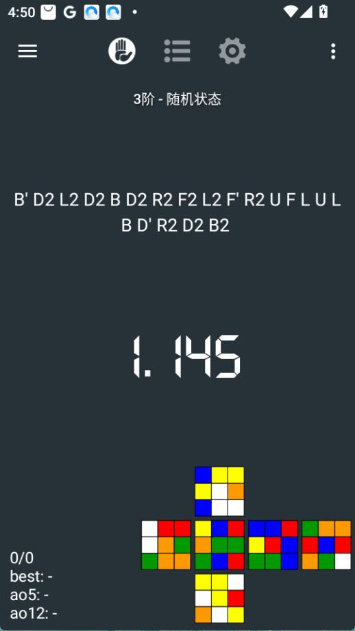
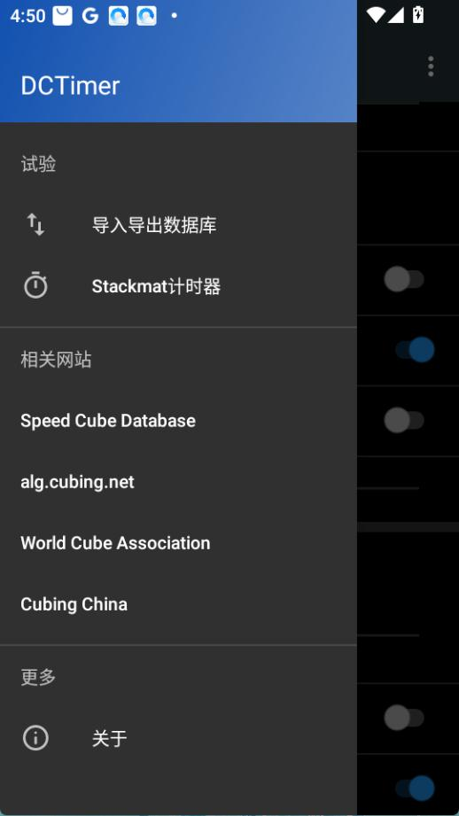

DCTimer 速拧计时器快问快答：计时、统计、数据迁移一次说清
整理了一份关于 DCTimer 的快问快答，覆盖计时原理、滚动平均统计、手动补录、XCross 求解器以及数据迁移等常见疑问。
整理一份关于 DCTimer 的快问快答，都是速拧玩家最常碰到的问题，直接给答案。
DCTimer 到底是什么？
一句话：这是一款专为魔方速拧设计的手机端计时器，Android 和 iOS 都有。和网页上随便搜得到的计时器不一样，DCTimer 是长期维护的专业工具——你可以去dctimer官网看一眼完整功能列表，它不止计时，还内置了打乱公式生成、滚动平均统计、求解器以及完整的成绩数据库管理。核心定位就是把你从一把速拧到长期训练数据，全流程攥在手里。
谁需要装这个？普通玩家还是职业选手？
都用。普通玩家刚入坑时，用网页计时器凑合一阵就会发现不够用——没有分组、没有统计、换浏览器数据就丢了。DCTimer 解决的就是这些痛点：分组管理不同阶段的训练、实时显示 ao5 反映手感波动、数据本地存 SQLite 不怕丢。职业选手训练也用，因为它的计时精度和 WCA 规则对齐，统计维度够全，而且 Stackmat 硬件计时器能直接连。简单说，认真拧魔方的都值得装，三分钟热度的网页工具够用。
怎么装？有几个平台？
Android 直接从 Google Play 装，如果在国内访问不了 Play，直接从官方下载拿安装包就行。iOS 在 App Store 搜就能下。两端数据格式是通的——Android 导出的 SQLite 文件 iOS 能读，反过来也行，这一点跨平台迁移时很关键。
计时怎么用？和网页计时器有啥不一样？
主界面就是一个大大的数字显示区，双手按住屏幕空白处进入待机状态（数字变绿），松手就开始计时，再次按住停止。这个交互和多数速拧计时器一致，但 DCTimer 在细节上做了不少优化：待机状态自动生成下一把的打乱公式显示在上方，不需要你额外去点按钮；计时过程中会检测你的按压手势，防止误触提前停表；分组之间切页也不用返回主界面，侧边栏直接切换。另外它支持和 Stackmat 硬件计时器联动——如果你参加线下比赛，接上 Stackmat 就可以用硬件触发计时，比纯触控更准。

统计面板里的 ao5、ao12 到底怎么算的？
这是速拧圈子里最核心的稳定度指标。ao 就是"去尾平均"——取最近 N 次成绩，去掉一个最好和一个最差，剩下的算平均。数量规则是统计数量的 5% 向上取整作为去尾量：5 次取 5% = 0.25 向上取整 = 1，所以 ao5 去 1 好 1 差剩 3 个；ao12 去 1 好 1 差剩 10 个；ao50 去 2 好 2 差剩 46 个；ao100 去 5 好 5 差剩 90 个。DCTimer 主界面实时显示当前分组的 ao5 和 ao12，长周期的 ao50、ao100 要进统计详情页看。如果最近几把里有 DNF（未完成），这些成绩自动排除在有效集之外，不会拉低平均。为什么用去尾？因为单把波动大——可能一把超神、一把手抖，去尾平均过滤掉极端值才是你真实的稳定水平。比赛中每轮看 ao5 最直观，长期训练跟踪 ao50 能看状态趋势。
手动输入成绩是啥场景用的？
三种情况最常见：一是把旧设备或者网页计时器上的历史成绩迁移过来，直接填时间值比一把一把重新拧一遍省事；二是用 Stackmat 计了时但 DCTimer 没连上硬件，事后手动补录；三是盲拧这类特殊项目，计时流程和正常速拧不同，需要事后录入。操作上找到手动输入入口，填入时间就行，格式和全局时间格式设置一致（通常是 SS.sss 或 HH:MM:SS.sss）。注意两点：手动输入的成绩不会自动附带打乱公式，需要自己补；如果要批量导入大量历史数据，建议直接用数据库导出/导入功能操作 SQLite 文件，比一条条填高效得多。
它自带求解器？XCross 是什么来头？
DCTimer 内置了几个实用求解器，其中 XCross 求解器是进阶玩家最常用的。XCross 全称 Extended Cross，比标准 Cross 更进一步：做底面十字的同时，顺便把第一组 F2L 的棱块和角块也归位。这样 Cross 完成时已经有一组 F2L 就位，F2L 阶段就只剩三组了，整体步数更少。相比普通 Cross 求解器只解底面四条棱归位，XCross 求解器的输出序列更长（因为包含了额外的棱角归位），但整体仍然经过优化。详细的求解器使用说明和 Cross/XCross 学习路线，去dctimer文档翻一下就有。学习门槛提醒一句：XCross 不是初学者碰的，等你 Cross 熟练稳定、F2L 四组能快速识别之后再考虑，否则容易贪快反而拖慢节奏。
数据安全吗？换手机怎么迁移？
DCTimer 的成绩全部存在本地 SQLite 数据库里，不上传云端。迁移方式很直接：Android 从侧边栏菜单进导出，iOS 通过 iTunes 文件共享导出 sqlite 文件；新手机上导入这个文件就行。但有个关键注意点——导入是直接覆盖模式，不是合并。如果两边都有训练记录不想丢，分别导出后用 SQLite 工具手动合并。另外旧版本的纯文本数据库已经不兼容新版了，0.9+ 版本之间可以互导，老用户升级前最好先确认格式。还有一个细节：导入完成后建议关掉 DCTimer 再重新打开，让应用重新加载数据库，不然有时会显示旧数据。

和 Cube Timer、CSTimer 比咋样？
三者都是速拧圈常用的工具，各有侧重。Cube Timer 偏简洁，计时功能到位但统计和数据管理较弱，适合日常随手拧两把。CSTimer 功能最全，统计维度和参数配置都比 DCTimer 更丰富，但界面相对复杂，上手需要适应一阵。DCTimer 走的是平衡路线——核心计时和统计够用，界面干净，跨平台数据迁移方便，内置求解器覆盖了大部分玩家的需求，又不像 CSTimer 那样堆砌参数。如果你的需求就是"靠谱计时 + 分组统计 + 数据不丢 + 偶尔查个解法"，DCTimer 是性价比最高的选择。
最后一句：认真拧魔方的话装一个，把网页计时器换掉。关于 DCTimer 的资料在三个仓库都能找到，GitHub 是主仓库方便查阅完整内容，Gitee 国内访问更顺畅，GitCode 作为额外备份也同步了一份。